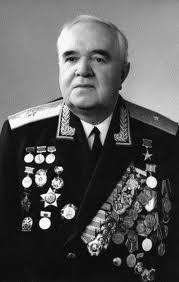

Бологое
Культура
Александров Борис Александрович
1905 - 1994

Композитор, дирижёр, педагог Б. А. Александров родился 22 июля (4 августа) 1905 года в г. Бологое Тверской области в семье музыканта А. В. Александрова - впоследствии создателя Краснознамённого ансамбля песни и пляски.
В 1946 году, после скоропостижной кончины А. В. Александрова, назначается начальником, художественным руководителем и главным дирижёром Краснознамённого ансамбля, который возглавляет четыре десятилетия, вплоть до конца 1986 года. Как руководитель прославленного коллектива объездил с гастролями практически весь Советский Союз, около 70 раз выезжал за рубеж. Под его руководством ансамбль был удостоен «Золотых Дисков» во Франции и Голландии, других престижных наград. Воспитал целый ряд известных певцов, оркестрантов и дирижёров.
Народный артист СССР (1958), Герой Социалистического труда (1975), лауреат Ленинской (1978) и Сталинской (1950) премий, генерал- майор (1973). Награждён 3 орденами Ленина, многими другими отечественными и иностранными орденами, медалями.
Скончался 17 июня 1994 года в Москве, похоронен на Новодевичьем кладбище. В честь Б. А. Александрова Министерством обороны России в 2005 году учреждена юбилейная медаль его имени. В доме в Москве, где он жил, установлена мемориальная доска.